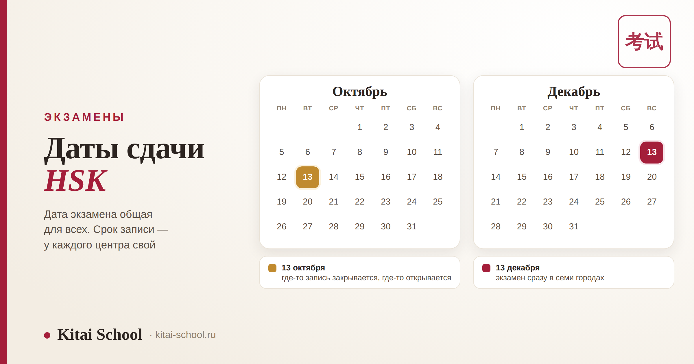
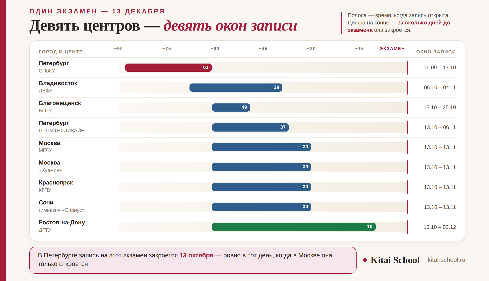

Экзамены HSK
Даты сдачи HSK: расписание сессий, сроки регистрации и как выбрать свою дату


Вопрос «когда можно сдать HSK» кажется простым, пока не начинаешь записываться. Оказывается, что дата экзамена — это полдела, а вторая половина спрятана в сроках регистрации: они у каждого центра свои, открываются и закрываются в разные дни, и пропустить окно куда легче, чем провалить аудирование. Разберём, как устроено расписание HSK на самом деле.
Даты экзамена назначают централизованно — поэтому одни и те же числа повторяются у центров в разных городах. А окно регистрации каждый центр держит своё: по осеннему расписанию 2026 года запись закрывается где за десять дней до экзамена, а где за два месяца. У окна есть не только закрытие, но и открытие — раньше него записаться нельзя, и у некоторых центров оно длится всего восемь дней. Отсюда правило: сначала смотрим сроки своего центра, потом планируем подготовку.
Как устроено расписание: даты общие, сроки записи местные
Если посмотреть расписание нескольких центров рядом, видно закономерность: числа повторяются. По осени 2026 года это 13 сентября, 17 и 18 октября, 7 ноября, 13 декабря — и эти же даты стоят у центров в разных городах, от Петербурга до Владивостока. Совпадение неслучайное: календарь сессий общий, центры выбирают из него те даты, которые готовы провести.
| Что | Кто определяет | Что из этого следует для вас |
|---|---|---|
| Дата экзамена | общий календарь сессий | в один день экзамен идёт сразу в нескольких городах |
| Окно регистрации | каждый центр сам | сроки у соседних центров расходятся в разы |
| Формат | центр | бумажный и компьютерный есть не везде |
| Какие экзамены в этот день | центр | HSKK обычно идёт с HSK, а YCT — далеко не в каждую сессию |
Практический вывод простой. Дату экзамена можно узнать откуда угодно — она везде одна. А вот срок регистрации нужно смотреть только у своего центра: чужая статья, соседний город и прошлогодний опыт здесь не помогут.
Расписание на осень 2026 года и почему у этой таблицы есть срок годности
Ниже — сессии, объявленные российскими центрами на осень 2026 года, по состоянию на 8 сентября. Часть окон регистрации к этому моменту уже закрыта: сравнивайте вторую колонку с сегодняшним числом.
| Город и центр | Экзамен | Регистрация |
|---|---|---|
| Москва, Институт Конфуция при МГЛУ | 17 октября | 17.08 – 17.09 |
| Москва, Институт Конфуция при МГЛУ | 13 декабря | 13.10 – 13.11 |
| Москва, центр «Хуамин» | 13 сентября | 13.07 – 13.08 |
| Москва, центр «Хуамин» | 18 октября, с YCT | 18.08 – 18.09 |
| Москва, центр «Хуамин» | 7 ноября | 07.09 – 07.10 |
| Москва, центр «Хуамин» | 13 декабря | 13.10 – 13.11 |
| Петербург, центр тестирования СПбГУ | 13 сентября | 17.06 – 14.07 |
| Петербург, центр тестирования СПбГУ | 13 декабря | 16.09 – 13.10 |
| Петербург, центр тестирования СПбГУ | 22 ноября, YCT | 24.08 – 30.09 |
| Петербург, ПРОМТЕХДИЗАЙН | 17 октября, с YCT | 17.08 – 07.09 |
| Петербург, ПРОМТЕХДИЗАЙН | 13 декабря | 13.10 – 06.11 |
| Новосибирск, Институт Конфуция НГТУ | 18 октября | 18.09 – 26.09 |
| Новосибирск, Институт Конфуция НГТУ | 7 декабря | 07.10 – 07.11 |
| Красноярск, КГПУ | 18 октября | 17.08 – 17.09 |
| Красноярск, КГПУ | 7 ноября | с 07.09, срок закрытия уточняйте в центре |
| Красноярск, КГПУ | 13 декабря | 13.10 – 13.11 |
| Улан-Удэ, БГУ | 8 декабря | 08.10 – 08.11 |
| Владивосток, ДВФУ | 12–13 декабря | 06.10 – 04.11 |
| Благовещенск, БГПУ | 17 октября | 17.08 – 30.08 |
| Благовещенск, БГПУ | 13 декабря | 13.10 – 25.10 |
| Сочи, гимназия «Сириус» | 13 декабря | 13.10 – 13.11 |
| Ростов-на-Дону, ДГТУ | 13 сентября, 17 октября, 7 ноября, 13 декабря | по каждой дате своё окно, закрывается за 10 дней |
| Екатеринбург, Иркутск, Уфа, Петербург (Академия «Конфуций») | даты уточняются | следите за объявлениями центров |
Теперь честно про эту таблицу. Она устареет — самое позднее после 13 декабря 2026 года, а отдельные строки могут поменяться и раньше: сессии переносят, центры добавляют даты. Поэтому у неё написана дата проверки, и поэтому она здесь не вместо официального источника, а рядом с ним. Перед подачей документов расписание всегда сверяют на сайте экзамена chinesetest.cn и в самом центре. Мы сознательно не публикуем телефоны и адреса: они меняются чаще дат, а устаревший контакт хуже, чем его отсутствие. Так же мы поступили в разборе записи на YCT в Москве.
И ещё одна деталь из объявлений центров, о которой легко забыть: регистрацию могут закрыть досрочно, когда набралось нужное число участников. То есть срок из таблицы — это крайняя дата, а не гарантия, что до неё будут места.
Главная ловушка: один экзамен, девять разных дедлайнов
Самое неожиданное в расписании видно, если взять одну дату и посмотреть, как к ней записывают разные центры. Возьмём 13 декабря — самую массовую сессию осени: её проводят сразу в нескольких городах.

Разброс получается шестикратный: в Ростове-на-Дону запись на 13 декабря закрывается за десять дней до экзамена, в петербургском центре СПбГУ — за шестьдесят один. Причём петербургское окно закрывается 13 октября — ровно в тот день, когда московское только открывается. Человек, который в середине октября спокойно записывается в Москве, в Петербурге на эту сессию уже опоздал.
Отсюда единственное надёжное правило: «обычно за месяц» — не работает. Это средняя температура, и в половине случаев она врёт в опасную сторону. Свой срок нужно узнать один раз и поставить напоминание на день открытия записи, а не на день закрытия.
Двое наших студентов осенью собирались на одну и ту же сессию. Один в Москве, вторая в Петербурге, уровень примерно одинаковый, готовились почти одинаково. Москвич записался в конце октября, спокойно, без спешки — у него окно было открыто. Петербурженка пришла записываться в те же дни и обнаружила, что в её центре запись закрылась две недели назад.
Дальше было хуже всего то, что она отлично знала про дедлайны и даже проверяла их — но проверяла в июле, когда окно ещё не открылось, увидела «регистрация не начата» и решила вернуться к этому позже. Вернулась после закрытия. В итоге сдавала в следующем полугодии, и это была не проблема подготовки, а проблема календаря.
С тех пор мы просим студентов делать одну скучную вещь: как только выбрали центр и дату, сразу поставить два напоминания — на день открытия записи и за три дня до закрытия. Занимает минуту, а спасает полгода.
Бумажный или компьютерный: что меняется, кроме экрана
Выбор формата выглядит как мелочь при записи, а на деле влияет на всю подготовку. Разница не в удобстве, а в том, что именно с вас спрашивают.
| Что сравниваем | Бумажный | Компьютерный |
|---|---|---|
| Иероглифы в письменной части | пишете рукой по памяти | набираете через пиньинь и выбираете нужный |
| Что тренировать | активное написание знака | узнавание знака и точный пиньинь |
| Аудирование | общий звук в аудитории | чаще в наушниках |
| Ответы | бланк, карандаш, поля для отметок | клик и клавиатура, черновика нет |
| Где узнать формат | только в своём центре: не каждая площадка проводит оба | |
Ключевая строка здесь — первая. Узнать иероглиф на экране и написать его рукой на бумаге — два разных навыка, и второй тренируется дольше. На уровнях, где появляется письмо, это чувствуется сразу: подробно про письменную часть — в разборе HSK 3 и подготовки к HSK 4. Формат выбирают до начала подготовки, а не за неделю до экзамена.
Опоздали с регистрацией: что можно, а что нельзя
Сначала неприятное: договориться и записаться после закрытия нельзя. Это не жёсткость конкретного центра, а порядок регистрации, и звонки с просьбами тут не работают. Зато работает другое.
| Вариант | Как это выглядит |
|---|---|
| Другой центр | дата экзамена та же, а окно записи другое — где-то ещё открыто |
| Следующая сессия | до конца полугодия обычно есть ещё одна дата |
| Использовать паузу | лишний месяц подготовки почти всегда поднимает балл |
| Уговорить центр | не получится: регистрация закрывается не по желанию площадки |
Первый вариант недооценивают чаще всего. Раз даты экзамена общие, а окна записи местные, опоздание в одном центре не означает опоздания вообще. Иногда достаточно посмотреть расписание соседнего города.
Как выбрать дату под свою подготовку
Правильный порядок — отсчёт назад от того момента, когда результат реально нужен, а не вперёд от сегодняшнего дня.
| Шаг | Что берём |
|---|---|
| 1. Когда нужен результат | подача в вуз, дедлайн стипендии, срок от работодателя |
| 2. Минус обработка | баллы приходят не сразу, а бумажный сертификат — ещё позже |
| 3. Минус срок записи | тот самый дедлайн вашего центра, от 10 дней до двух месяцев |
| 4. Получили крайнюю сессию | дальше выбираем из более ранних ту, к которой уровень взят |
И главное правило, которое мы повторяем всем: идти, когда готов, а не когда ближайшая дата. Сессий в году несколько, пропущенная не стоит почти ничего, а неудачная попытка стоит и денег, и уверенности. Сколько времени занимает уровень — считали в статье за какое время реально выучить китайский. Проверить готовность до записи помогает пробный тест. И помните про срок действия результата: он ограничен, поэтому сдавать «заранее, чтобы просто был» — плохая идея, об этом подробно в разборе сертификата HSK.
Частые вопросы (FAQ)
Как часто можно сдавать HSK?
Несколько раз в год. В расписании на осень 2026 года у российских центров стоят сессии в сентябре, октябре, ноябре и декабре — но не каждый центр проводит каждую из них. Один центр может брать одну сессию за осень, другой — четыре. Поэтому вопрос «как часто проходит экзамен» правильнее задавать не про HSK вообще, а про конкретный центр: именно его расписание определяет, сколько у вас попыток в этом полугодии.
За сколько дней до экзамена закрывается регистрация?
Единого срока нет, и это главное, что стоит запомнить. По расписанию на осень 2026 года разброс идёт от десяти дней до двух месяцев до даты экзамена. На одну и ту же сессию 13 декабря в Ростове-на-Дону запись закрывается за десять дней, а в Петербургском центре СПбГУ — за шестьдесят один. Ориентироваться на «обычно за месяц» опасно: в половине случаев это неверно. Смотрите срок своего центра.
Можно ли записаться заранее, за полгода?
Нет. У регистрации есть не только дата закрытия, но и дата открытия, и до неё запись просто не работает. Часто окно открывается ровно за два месяца до экзамена, а у отдельных центров держится всего восемь дней. Так что «запишусь заранее и забуду» не выйдет: нужно знать, когда окно откроется, и не пропустить его.
Я опоздал с регистрацией. Что можно сделать?
Договориться и записаться после закрытия нельзя — это не вопрос доброй воли центра. Реально работают три вещи. Посмотреть другой центр: даты экзамена у центров совпадают, а окна записи разные, и где-то запись ещё открыта. Посмотреть следующую сессию: до конца полугодия обычно есть ещё одна. И третье, самое полезное: занять освободившееся время подготовкой, а не досадой — лишний месяц перед экзаменом почти всегда идёт на пользу баллу.
Чем бумажный экзамен отличается от компьютерного?
Главное отличие не в экране, а в иероглифах. На бумаге вы пишете их рукой, на компьютере набираете через пиньинь — а это разные навыки. Узнать знак на экране и написать его по памяти на бумаге — совсем не одно и то же, и на письменной части HSK 3 и выше разница чувствуется сразу. Выбирать формат стоит до начала подготовки, а не за неделю до экзамена. Уточните у центра, какой формат он проводит: не все площадки дают оба.
Как выбрать дату под свою подготовку?
Отсчётом назад, а не вперёд. Сначала решите, к какому сроку вам нужен результат: подача документов в вуз, дедлайн стипендии, требование работодателя. Отнимите время на обработку результатов и печать сертификата, отнимите срок закрытия записи в вашем центре — и получите крайнюю сессию. Дальше выбирайте из более ранних дат ту, к которой уровень будет взят уверенно. Правило простое: идти, когда готов, а не когда ближайшая дата.
Мы ведём студентов не только по учебнику, но и по календарю: подбираем сессию под ваш уровень, следим за окном регистрации и прогоняем формат до экзамена. Приходите на бесплатное пробное занятие — посмотрим, где вы сейчас, и наметим реальную дату сдачи.
Или напишите слово ДАТЫ нашему менеджеру в Telegram — поможем выбрать сессию и не пропустить запись.
Дальше по теме: что подтверждает результат и сколько он действует — сертификат HSK; с чего начать — HSK 1; как растёт объём от уровня к уровню — от HSK 1 до HSK 4; как считают баллы — система оценки HSK 4; устная часть — HSKK; детский экзамен — YCT и запись на YCT в Москве; занятия — индивидуальные уроки. Все экзамены — в разделе «Экзамены HSK».
Источники
- Официальный сайт экзамена chinesetest.cn — расписание сессий, список аккредитованных центров и порядок регистрации.
- Объявления российских экзаменационных центров о датах HSK, HSKK и YCT на осень 2026 года и сроках регистрации. Проверено 8 сентября 2026 года.
- Практика Kitai School — сопровождение студентов при записи на экзамен и планировании подготовки под сессию.
Выберите свою дату — и спокойной подготовки! 加油！